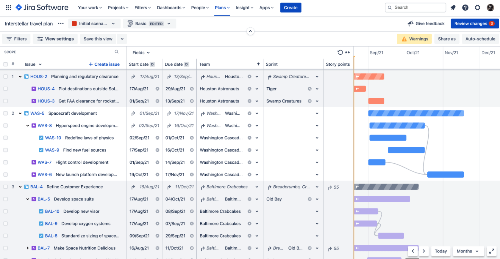
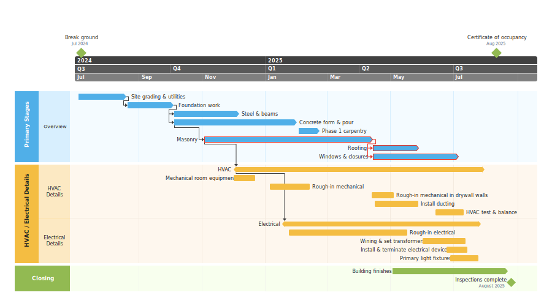

<div class="center">
  <input
    type="file"
    accept=".csv"
    multiple="false"
    (change)="getData($event)"
  />
  <h3>Instructions</h3>
  <p>1. Export Jira Advanced Roadmaps to CSV</p>
  <p>2. Upload CSV here and let it do its magic (it'll output an xlsx file)</p>
  <p>3. Import the file generated here to Office Timeline</p>
</div>



